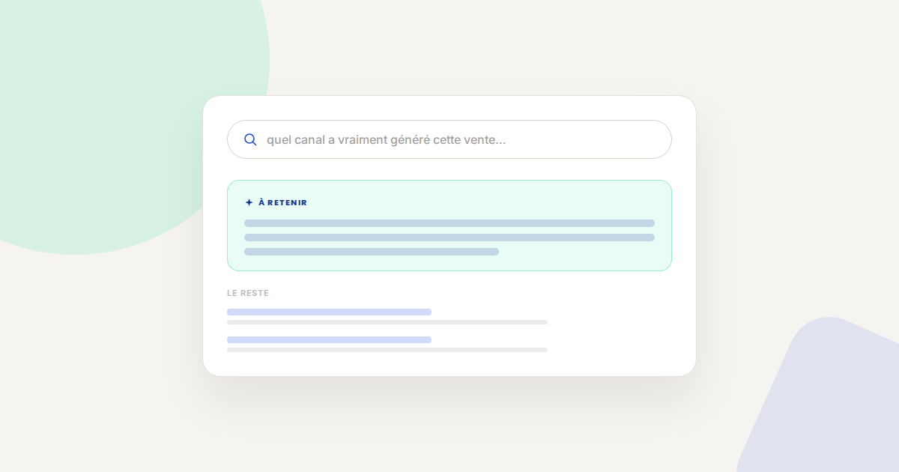
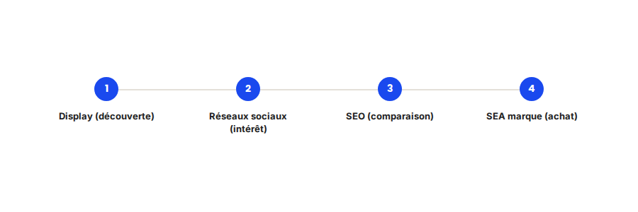

Attribution multi-touch : pourquoi le dernier clic ment sur votre ROI
Si votre reporting attribue 100 % de la conversion au dernier canal cliqué avant l'achat, vous êtes probablement en train de sur-financer le SEA de marque et de sous-financer tout ce qui construit la demande en amont. L'attribution dernier clic n'est pas fausse — elle est juste partielle, et elle ment par omission.

C'est l'un des biais les plus coûteux que je trouve dans les comptes que j'audite : un reporting basé sur le dernier clic qui pousse, année après année, à couper les budgets de notoriété (Display, réseaux sociaux, contenu) au profit du SEA de marque — qui capte mécaniquement la conversion finale sans avoir généré la demande initiale.
Ce qui ne change pas
Aucun modèle d'attribution, aussi sophistiqué soit-il, ne remplace un tracking propre en amont : sans GA4 correctement configuré et sans Conversion API pour fiabiliser les événements, même le meilleur modèle multi-touch travaille sur des données incomplètes. L'attribution ne corrige pas un tracking défaillant, elle répartit plus intelligemment ce qui est effectivement mesuré.
Ce qui change vraiment avec le multi-touch
- Chaque point de contact reçoit une part du mérite, pas juste le dernier. Les modèles basés sur les données (data-driven attribution, disponible nativement dans GA4) répartissent la conversion entre tous les canaux du parcours, selon leur contribution réelle mesurée statistiquement.
- Les canaux de notoriété redeviennent visibles dans le ROI. Un canal comme le Display, souvent jugé peu performant en dernier clic, peut se révéler être le déclencheur initial d'une part significative des conversions attribuées à d'autres canaux en aval.
- Le budget se réalloue différemment. Une fois la contribution réelle de chaque canal mesurée, les arbitrages budgétaires changent : on finance ce qui construit la demande, pas seulement ce qui la capte en bout de course.
- La lecture devient plus complexe, pas plus simple. Un modèle multi-touch demande une lecture en délais de conversion et en chemins de conversion, pas un chiffre unique par canal — ce qui exige un vrai temps d'analyse, pas un tableau de bord automatique.

Un exemple qui illustre bien la différence
Sur un compte e-commerce que j'ai audité, le dernier clic attribuait 70 % des conversions au SEA de marque et seulement 8 % au Display. En passant à un modèle data-driven, la part réelle du Display dans les parcours de conversion est montée à 24 % : il apparaissait dans la majorité des chemins, en première ou deuxième position, sans jamais être le dernier clic. Couper ce budget, comme l'envisageait le client sur la base du seul reporting dernier clic, aurait mécaniquement fait baisser le volume global de conversions quelques semaines plus tard.
Ce qu'il faut faire concrètement
- Activez l'attribution data-driven dans GA4, disponible par défaut dès qu'il y a assez de volume de conversions : c'est le point de départ le plus simple, sans outil tiers.
- Regardez les chemins de conversion (rapport « Chemins de conversion multicanaux ») avant de couper un budget qui semble sous-performer en dernier clic — il joue peut-être un rôle en amont invisible autrement.
- Ne basculez pas tout d'un coup : testez les nouvelles allocations budgétaires progressivement, sur une portion du budget, pour valider l'hypothèse avant un changement complet de stratégie.
- Documentez la fenêtre de conversion adaptée à votre cycle de vente : un modèle multi-touch mal calibré sur une fenêtre trop courte reproduit les biais du dernier clic sans le savoir.
FAQ
L'attribution multi-touch est-elle disponible gratuitement dans GA4 ?
Oui, l'attribution data-driven est intégrée nativement à GA4 sans coût supplémentaire, dès qu'il y a un volume de données suffisant pour l'entraîner correctement.
Faut-il abandonner complètement le dernier clic ?
Non, il reste utile comme indicateur simple et rapide à lire pour un suivi quotidien. Le problème n'est pas de le consulter, c'est de baser des décisions budgétaires structurantes uniquement dessus.
L'attribution multi-touch fonctionne-t-elle pour un petit volume de conversions ?
Moins bien : les modèles data-driven ont besoin d'un volume minimum de données pour être statistiquement fiables. En dessous, un modèle basé sur des règles (linéaire, position) reste une alternative plus stable.
Envie d'y voir clair sur la contribution réelle de vos canaux ?
Pour aller plus loin, voir la page Analytics, la page Consultant GA4, et la page Conversion API.
Pour continuer sur ce sujet.